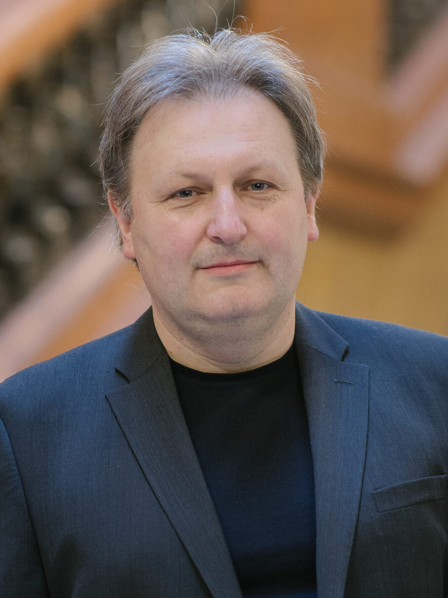
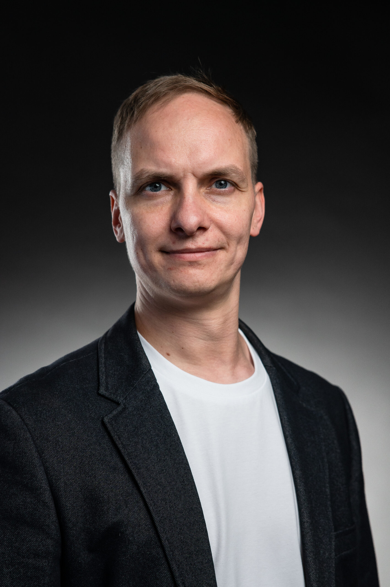
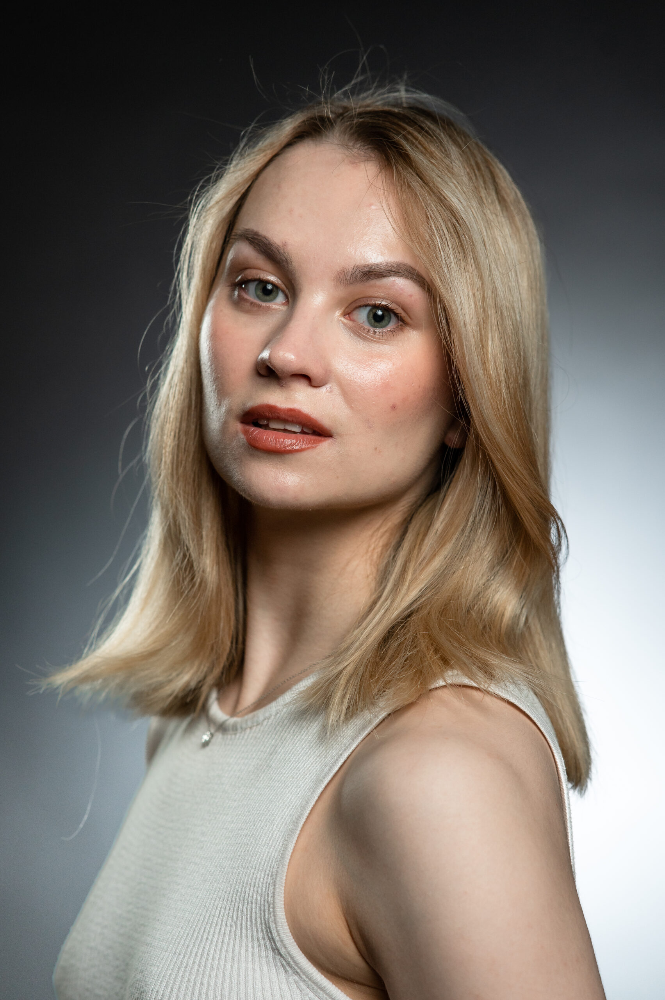

Заслужений артист України (2017). Грамота Верховної Ради України (2020). Медаль Міністерства культури України (2014).
Брав приватні уроки у Миколи Колесси та Іллі Мусіна — видатних представників радянської та української диригентської школи.
З 2003 р. — диригент Львівського національного академічного театру опери та балету ім. С. Крушельницької. Постановки: «Дон Жуан», «Весілля Фігаро» Моцарта, «Дон Кіхот» Мінкуса, «Корсар» Адана, «Мавка» Польової та ін.
З 2005 р. — завідувач кафедри оперної підготовки та головний диригент Оперної студії Львівської національної музичної академії ім. М. Лисенка. Виконано всі скрипкові концерти М. Скорика.
Teatro Verdi (Трієст, 2019–2026), Варшавська філармонія, Concertgebouw (Амстердам). Запрошений диригент Міжнародного конкурсу ім. Р. Ліпіцера та конкурсу ім. М. Скорика. Виступав у Франції, Польщі, Словаччині, Чехії, Угорщині, Німеччині, Іспанії, Португалії, Бельгії, Нідерландах, Норвегії.

У 2018 р. закінчив Національну музичну академію України ім. П. І. Чайковського (спеціальність «Музична режисура»). З 2015 р. — співзасновник мистецького об'єднання HRONOTOP.UA.
2014–2016 — артист-вокаліст, NOVA OPERA. 2016–2018 — технічний директор «Дикого Театру» (Київ). 2018–2019 — режисер-постановник Одеського НАТОіБ. З серпня 2022 р. — режисер-постановник Львівської національної опери.
«Гармонія сфер» (мультимедійний перформанс, 2023), «Русалонька» Катсамацу (2024), «Катерина» Аркаса — Івано-Франківська філармонія (2024), Реквієм Моцарта — Театр ім. І. Франка (2025), «Марія де Буенос-Айрес» — Театр ім. Леся Курбаса (2026).
GOGOLFEST 2014–2015, IV фестиваль молодої режисури ім. Леся Курбаса, Międzynarodowe Spotkania Teatrów Tańca (Люблін), British Council «Taking The New» 2017, «Оперний вікенд», «Plan B» 2018.

Випускниця з відзнакою Львівської державної хореографічної школи. Магістр хореографії Дрогобицького державного педагогічного університету ім. І. Франка.
З 2016 р. — артистка балету Львівської національної опери. Партії: Палагна («Тіні забутих предків»), Відьма («Білосніжка»), Килина («Мавка»), варіація Флори («Дон Кіхот») та ін.
Хореограф-постановник номеру «Діти війни» (музика В. Польової) на фестивалі «Резиденція класичного танцю ім. Роми Прийми-Богачевської». Дипломантка конкурсів Spoleto та NapoliDOC (Італія).
Іспанія, Італія, США, Канада, Тайвань, Саудівська Аравія, Німеччина, Польща, Португалія. Відзначена подякою Львівської міської ради за мистецьку діяльність (2026).